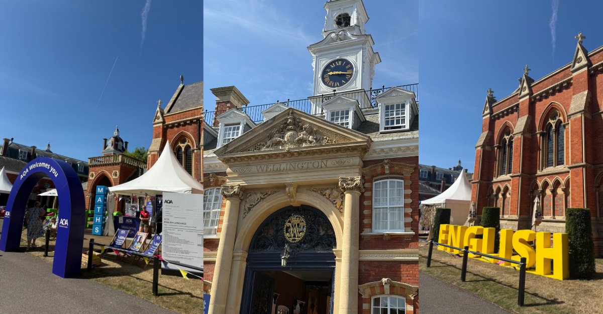

What Is School Actually For?

A question that quietly sits beneath every debate in education.
Last week I attended two very different education conferences. At the Festival of Education, the conversations ranged across AI, business, student voice, inclusion and the future of schools. At Pearson Online Schools Day, they shifted to flexible schooling, attendance, online pedagogy, safeguarding, assessment and accreditation. Different rooms, different agendas, and yet I came home from both with the same question.
What is school actually for?
It sounds almost absurd to ask. Surely we already know. Yet the more I listened, the more I realised that almost every disagreement in education begins with people answering that question differently, without ever saying so aloud.
Take attendance. One group asks, "How do we improve attendance?" Another asks, "How do we improve engagement?" Those sound like similar questions. They are not. One assumes school is fundamentally a place. The other assumes school is fundamentally a relationship.
Take artificial intelligence. Some discussions begin with "How do we stop students using AI?" Others begin with "How do we help students think well in a world where AI exists?" Neighbouring questions, apparently — but one sees school as protecting existing knowledge, and the other sees school as cultivating judgement.
Take assessment. Are examinations there to rank learners, or to make thinking visible? One treats assessment as sorting. The other treats it as revealing. Depending on your answer, you design entirely different systems.
And then take Alternative Provision — because here the pattern deepens rather than repeats.
For years, I thought Alternative Provision was somewhere children went when mainstream education couldn't meet their needs. Now I think it is something else. It is where education experiments with questions the rest of the system has not yet found the courage to ask. What if belonging comes before attendance? What if flexibility increases participation? What if smaller communities create stronger relationships? What if trust is an educational outcome rather than a pastoral one?
Perhaps Alternative Provision isn't operating outside the future of education. Perhaps it is rehearsing it.
The same pattern appeared again and again across both conferences. Teachers spoke about relationships. School leaders spoke about recruitment. Researchers spoke about evidence. Parents spoke about flexibility. Students spoke about being seen. AI specialists spoke about assessment. Nobody was really disagreeing. They were simply answering different versions of the same invisible question.
For centuries, the answer has been relatively stable. School gathered children into one physical place. Knowledge was scarce; teachers held expertise; attendance was synonymous with participation; qualifications acted as passports into adult life. That architecture made sense. It was built for the world that existed.
The question is whether it remains sufficient for the world emerging around us. Adults now work flexibly. Universities blend physical and digital learning. Artificial intelligence places vast knowledge within seconds of every learner. Children build communities that exist across geography, and many families need education that bends without breaking. The landscape has changed. Shouldn't we at least be willing to ask whether some of our assumptions should change with it?
Notice what I'm not asking. I'm not asking whether online schools should replace traditional schools. They shouldn't. I'm not asking whether examinations should disappear. They won't. I'm not asking whether buildings still matter. Of course they do.
I'm asking something quieter. Before we redesign education, shouldn't we agree what it is trying to achieve?
Perhaps school exists to help children flourish. Perhaps it exists to cultivate wisdom, or to help young people discover who they are in relation to others. Perhaps qualifications, attendance, technology, buildings and timetables all matter — but as means rather than ends.
Dr Kevin House, FCCT, FRSA posed a question beneath an article I wrote last week that I haven't stopped thinking about.
"What happens when the credential no longer holds the child?"
Credentials still matter. They open doors; they recognise achievement. But they cannot carry everything. They cannot create belonging. They cannot generate curiosity. They cannot substitute for trust. If we ask qualifications to carry the whole purpose of education, we place an impossible burden upon them.
Perhaps the child has always needed to be held first.
I don't yet know the answer to the question I began with. In truth, I hope we never settle it completely. Questions like these should remain alive, because every generation inherits a different world — and perhaps every generation must also rediscover what school is for.
What I do know is this. Until we ask the question openly, we will continue arguing about attendance, AI, assessment, flexibility and policy without recognising that we are debating the branches while quietly disagreeing about the roots.
A conversation, not a conclusion
So I'll leave you with the same question I brought home.
What is school actually for? Not what it has been. Not what inspection frameworks measure. Not what policy currently rewards. What, in your view, is its deepest purpose?
Because I have a feeling that if we can answer that together, many of our other arguments begin to make much more sense.
—
Kirstin Stevens
Building Schools in the Cloud
First published in Building Schools in the Cloud on LinkedIn, 6 July 2026.